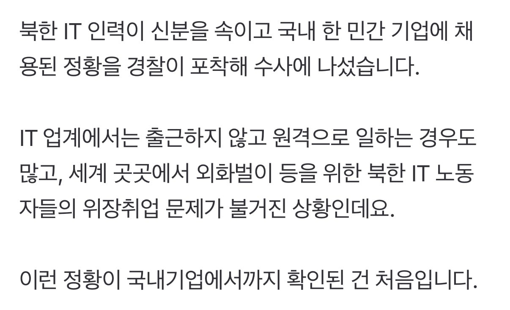

컴흑흑 ㅠㅠㅠ

컴흑흑 ㅠㅠㅠ
원천금지까지야.. 주 1회 이상 출근 정도만 해도 북한위장취업자들은 다 걸러질듯
외화벌이가 그렇게까지 절실해지면 돼지놈들이 대안을 생각해내겠지만
갑자기 위장취업자들이 안 걸리려고 주 1회 탈북 월남 한다는 생각하니 웃겼음 ㅋㅋㅋ
갠적으로 재택을 함으로써 교통시간 + 집세 등이 절약되는 요소가 어마어마해서 생산성 하락을 불러올 수 있음.
간첩이면 애초에 넘어와있는 경우도 허다하겠지뭐
근데 재택근무라도 화상면접같은거 안함?
뉴스에서 북한사람들 화상면접때도 당당하게 나와서 뉴스에 한동안 탄적있음 한국인인척 외국기업에 지원한건데
그사람이 수상하게여기고 당신 북한사람이지?? 하니까 도망침
재내들도 화상면접 충분히볼줄암
하루주갔어
근데 찐 실력자들이긴 함 ㅋㅋㅋㅋ
목숨걸고 하던애들이라
지구상 그 어느 컴공과 평균보단 낫겟지
최종면접에 김정은개새끼 해보세요 하면
거르자너 ㅋㅋㅋ
통일부가 가만히 있지 않을것
개발 실력 엄청났을듯.
데드라인을 목숨걸고 엄수ㄷㄷ
안보 문제로 IT업계 재택근무를 원천 금지해버리는건 좀 그렇나? 가만 놔뒀다가는 남파간첩들 꿀통 되겠는데.